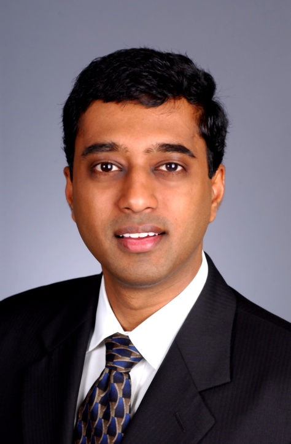

|  |
Chandrasekhar BoyapatiFormer Assistant Professor, EECS Department, University of MichiganPh.D. Computer Science, MIT, 2004 In 2012, Chandra left the University of Michigan and joined Google, where he worked on Google Search Ranking. In 2023, Chandra left Google and joined Apple, where he is working on Artificial Intelligence and Machine Learning. Chandra also has a LinkedIn page. This is Chandra's academic webpage. It has largely not been updated since 2012. Teaching EECS 590: Advanced Programming Languages (Winter 2011, Winter 2010, Winter 2009, Winter 2007, Winter 2006, Winter 2005, Winter 2004) EECS 490: Programming Languages (Fall 2006, Fall 2005, Fall 2004) EECS 203: Discrete Mathematics (Fall 2010, Fall 2009) EECS 183: Elementary Programming Concepts (Winter 2012, Fall 2011, Fall 2008, Winter 2008) Former Graduate Students Michael Roberson (Microsoft) Ph.D. Thesis: Glass Box Software Model Checking Paul Darga (Google) Pratibha Permandla (Microsoft) Murtaza Basrai (Google) Melanie Harries (Bloomberg) Bashar Al-Rawi (Microsoft) Professional Activities FSE 2013: ACM Foundation of Software Engineering (Program Committee) ESOP 2012: ETAPS European Symposium on Programming (Program Committee) OOPSLA 2011: ACM Object-Oriented Programming, Systems, Languages, and Applications (External Review Committee) PLDI 2010: ACM Programming Language Design and Implementation (External Review Committee) SATE 2009: NIST Static Analysis Tool Exposition Workshop (Program Committee) SAS 2007: NIST Static Analysis Summit (Program Committee) IWACO 2007: ECOOP International Workshop on Aliasing, Confinement and Ownership in Object-Oriented Programming (Program Committee) SAC 2007: ACM Symposium on Applied Computing: Software Verification Track (Program Committee) TAP 2007: IFIP Tests and Proofs (Program Committee) OOPSLA 2006: ACM Object-Oriented Programming, Systems, Languages, and Applications (Program Committee) COMPSAC 2006: IEEE Computer Software and Applications Conference (Program Committee) PLDI 2004: ACM Programming Language Design and Implementation (Program Committee) SOW 2002: MIT Student Oxygen Workshop (Program Committee) Publications ACM SIGSOFT Impact Paper Award 2012: Systematic Software Testing: The Korat Approach (FSE 2012) A Static Analysis for Automatic Detection of Atomicity Violations in Java Programs (UM 2011) Efficient Modular Glass Box Software Model Checking (OOPSLA 2010) Efficient Software Model Checking of Soundness of Type Systems (OOPSLA 2008) A Type System for Preventing Data Races and Deadlocks in the Java Virtual Machine Language (LCTES 2007) Efficient Software Model Checking of Data Structure Properties (OOPSLA 2006) SafeJava: A Unified Type System for Safe Programming (MIT 2004) Lazy Modular Upgrades in Persistent Object Stores (OOPSLA 2003) Ownership Types for Safe Region-Based Memory Management in Real-Time Java (PLDI 2003) Ownership Types for Object Encapsulation (POPL 2003) Ownership Types for Safe Programming: Preventing Data Races and Deadlocks (OOPSLA 2002) Korat: Automated Testing Based on Java Predicates (ISSTA 2002) A Parameterized Type System for Race-Free Java Programs (OOPSLA 2001) More... Projects SafeJava: A Next Generation Safe Programming Language Glass Box Software Model Checking Research Chandra's primary research interest is software reliability, which spans the spectrum from programming languages, through program analysis, to software engineering. He is interested in all approaches for helping programmers write and maintain reliable software. He is particularly interested in type systems and software model checking techniques to improve software reliability. More information on his research is available here. Biographical Sketch Chandra Boyapati is an Assistant Professor in the Department of Electrical Engineering and Computer Science at the University of Michigan. He received his Ph.D. in Electrical Engineering and Computer Science from the Massachusetts Institute of Technology, and his B.Tech. in Computer Science and Engineering from the Indian Institute of Technology, Madras. His curriculum vitae is available online. Personal Chandra and Lahari got married in December 2003 in Tirupati, India. Their daughter Asha was born in June 2007. Their son Vivek was born in February 2014. |
![[Mail]](./images/mailbox.gif)
![[boyapati dot chandrasekhar at gmail dot com]](./images/email.png)
{kind=link}